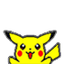

<nav class="navbar navbar-inverse bs-dark">
  <div class="navbar-header">
    <button type="button" class="navbar-toggle collapsed" data-toggle="collapse"
            data-target="#bs-example-navbar-collapse-1" aria-expanded="false">
      <span class="sr-only">Toggle navigation</span>
      <span class="icon-bar"></span>
      <span class="icon-bar"></span>
      <span class="icon-bar"></span>
    </button>
    <a class="navbar-brand" routerLink=""></a>
  </div>

  <div class="collapse navbar-collapse" id="bs-example-navbar-collapse-1">
    <ul class="nav navbar-nav">
      <li routerLinkActive="active" [routerLinkActiveOptions]="{exact: true}"><a routerLink="/">Events</a></li>
      <li routerLinkActive="active"><a routerLink="/newevent" *ngIf="loggedIn">Event maken</a></li>
    </ul>

    <ul class="nav navbar-nav navbar-right">
      <li class="dropdown" routerLinkActive="active">
        <a class="dropdown-toggle" data-toggle="dropdown" role="button"
           aria-haspopup="true" aria-expanded="false" id="dropdown">
          Account
        </a>
        <ul class="dropdown-menu" *ngIf="!loggedIn">
            <li><a routerLink="/login" style="cursor:pointer;">Inloggen</a></li>
            <li><a routerLink="/register" style="cursor:pointer;">Registreren</a></li>
        </ul>
        <ul class="dropdown-menu" *ngIf="loggedIn">
            <li><a [routerLink]="['myevents']" style="cursor:pointer;">Mijn Events</a></li>
            <li role="separator" class="divider"></li>
            <li><a [routerLink]="['account/settings']" style="cursor:pointer;">Instellingen</a></li>
            <li><a (click)="onLogout()" style="cursor:pointer;">Uitloggen</a></li>
        </ul>
      </li>
    </ul>

  </div>
</nav>
